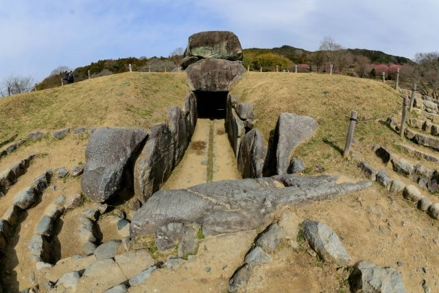
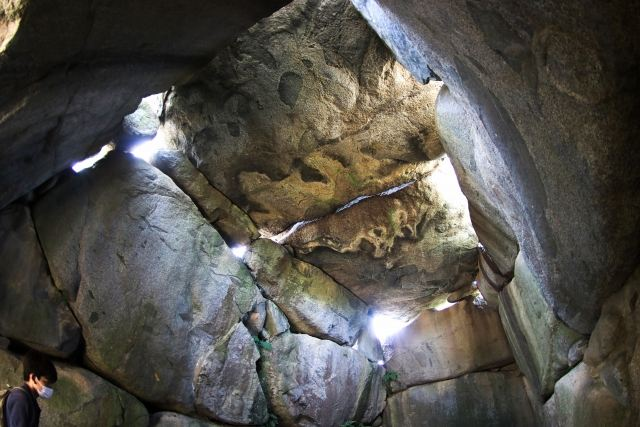
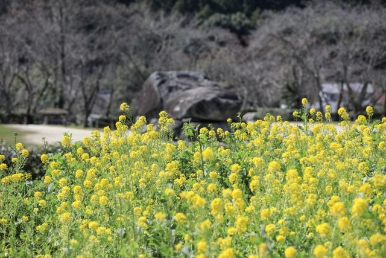

巨大な石室
約30個の花崗岩で築かれた日本最大級の横穴式石室です。

明日香村を代表する観光スポットのひとつで、 巨大な石を積み上げて造られた石室が特徴の古墳です。 蘇我馬子の墓とする説が有力ですが、 現在も多くの謎が残されています。
| 営業時間 | 8:30〜17:00（受付16:45まで） |
|---|---|
| 定休日 | 年中無休 |
| 料金 |
大人300円 中学生以下100円 |
| 所要時間 | 約30分 |
| 駐車場 |
飛鳥観光協会 石舞台駐車場
（徒歩約1分・有料）
国営飛鳥歴史公園 石舞台地区駐車場 （徒歩約1分・無料） |
| アクセス |
近鉄飛鳥駅から奈良交通バス「石舞台」下車徒歩約3分 周辺は坂道があります。歩きやすい靴がおすすめです。 石室内部は段差があります。 |
| 地図 | 地図はこちら |

約30個の花崗岩で築かれた日本最大級の横穴式石室です。

最大約77トンの天井石は、石舞台古墳を象徴する見どころです。

春の桜や秋の紅葉など、季節ごとに異なる景観を楽しめます。
石舞台古墳は7世紀初頭に築造されたと考えられる古墳です。 墳丘の土が失われ、現在のように巨大な石室が露出した姿になりました。 被葬者については、飛鳥時代の有力者である蘇我馬子の墓とする説がありますが、確定はしていません。